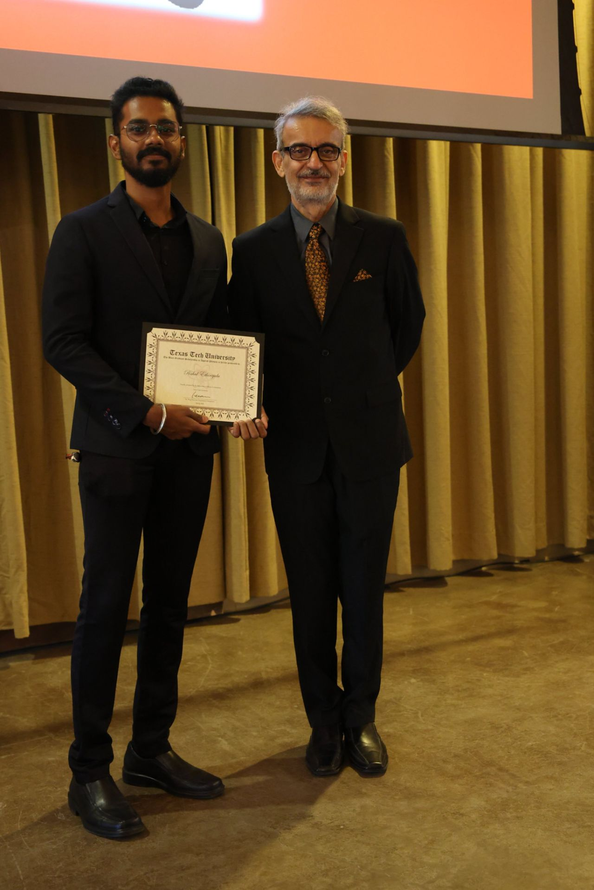
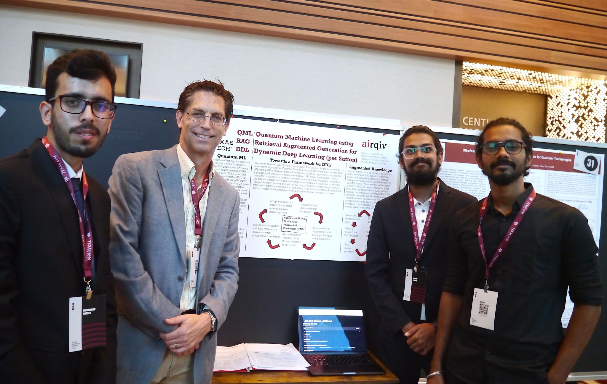
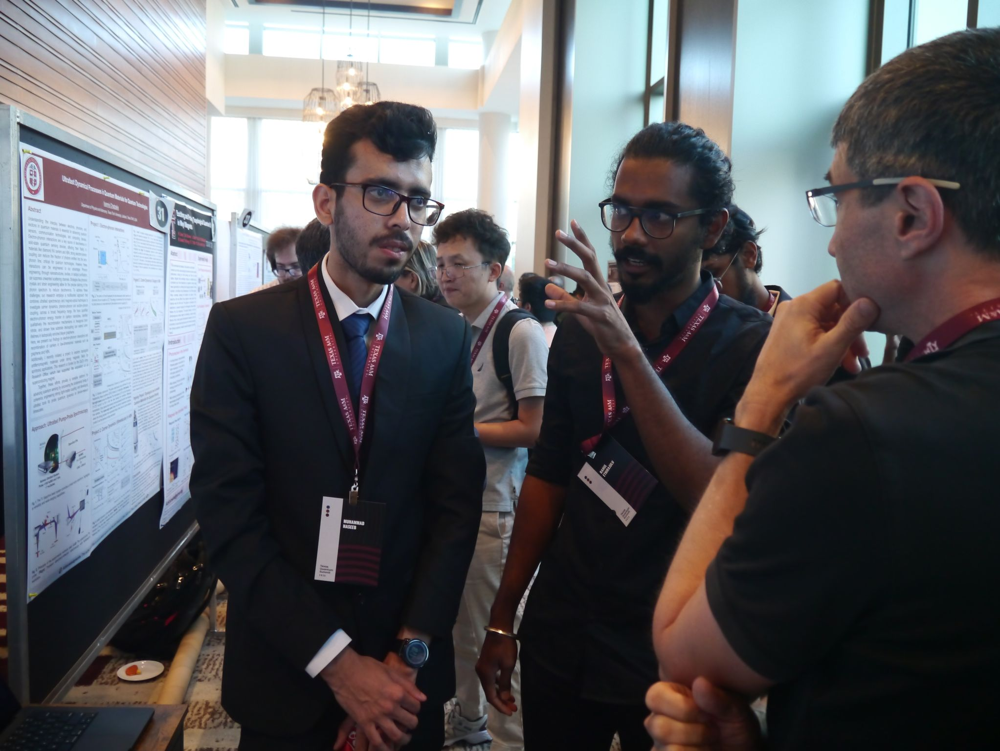
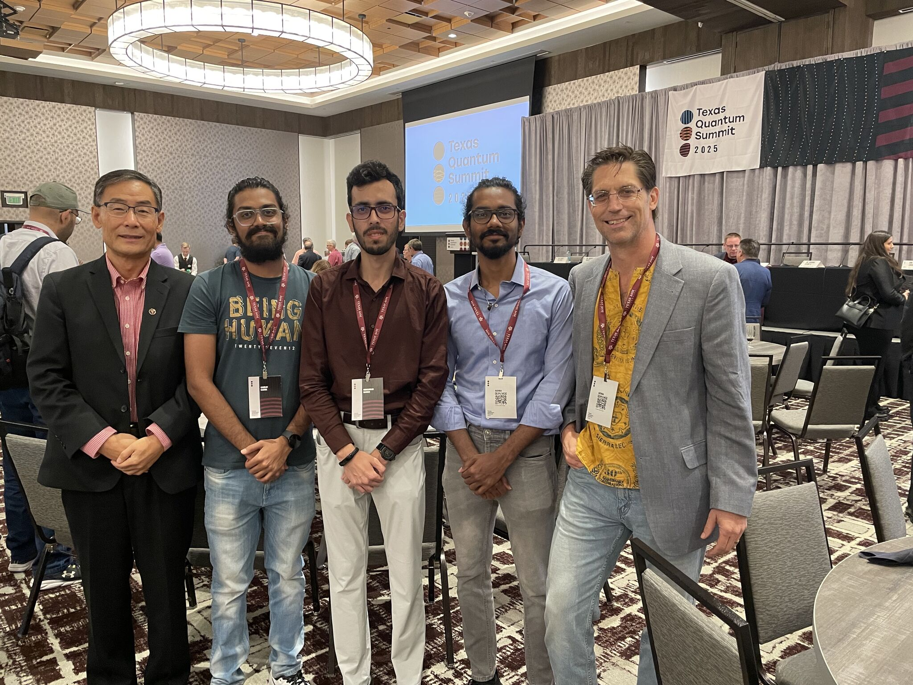
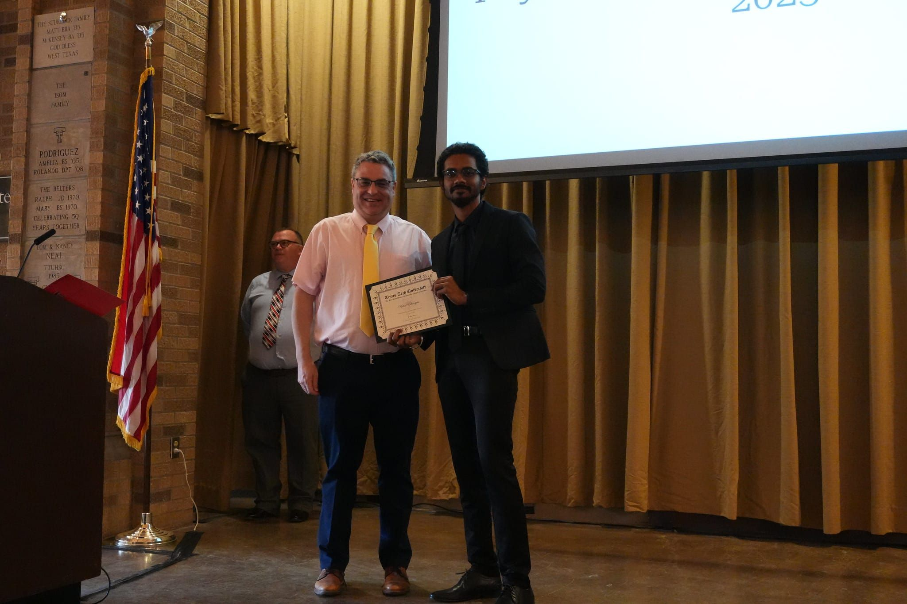

News

April 2026
Received the Bucy Graduate Scholarship
I was honored to receive the Bucy Graduate Scholarship during the Texas Tech University Physics and Astronomy Department Annual Banquet and 100th anniversary celebration.
This recognition, along with support from the department and my research advisor Michael Fausnaugh, is a meaningful encouragement as I continue my doctoral research.
- Celebrated the department's 100th anniversary with the Texas Tech Physics and Astronomy community.
- Received the Bucy Graduate Scholarship as part of the annual department banquet.
- Continued building momentum in my Ph.D. research journey at Texas Tech University.
September 2025
Presented at the First Texas Quantum Summit 2025
I was honored to present at the First Texas Quantum Summit 2025 at Texas A&M University, where our team showcased a poster on quantum machine learning, retrieval-augmented generation, and continual learning in dynamic systems.
This work was developed in collaboration with Gaurav Karwa and Muhammad Haseeb, with guidance from Dr. Paul Bjerk, and explored a hybrid QNN-RAG framework using ICU patient data as a proof of concept.




April 2025
Received the Peter Seibt Memorial Scholarship
I was honored to receive the Peter Seibt Memorial Scholarship during the 2025 Physics Banquet at the Frazier Pavilion Plaza at Texas Tech University.
This award recognizes outstanding graduate students in the Department of Physics and Astronomy, and I am grateful for the support and encouragement of the department and faculty as I continue my academic journey.